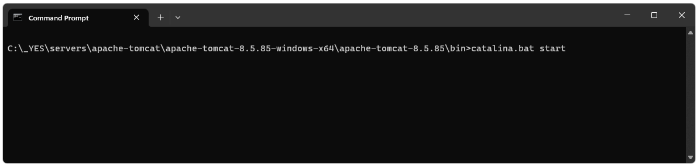
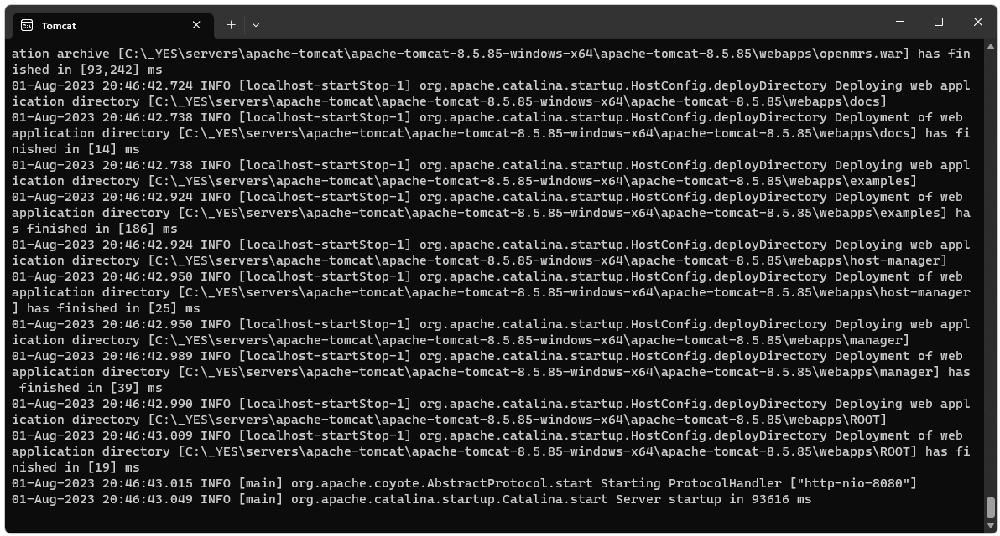
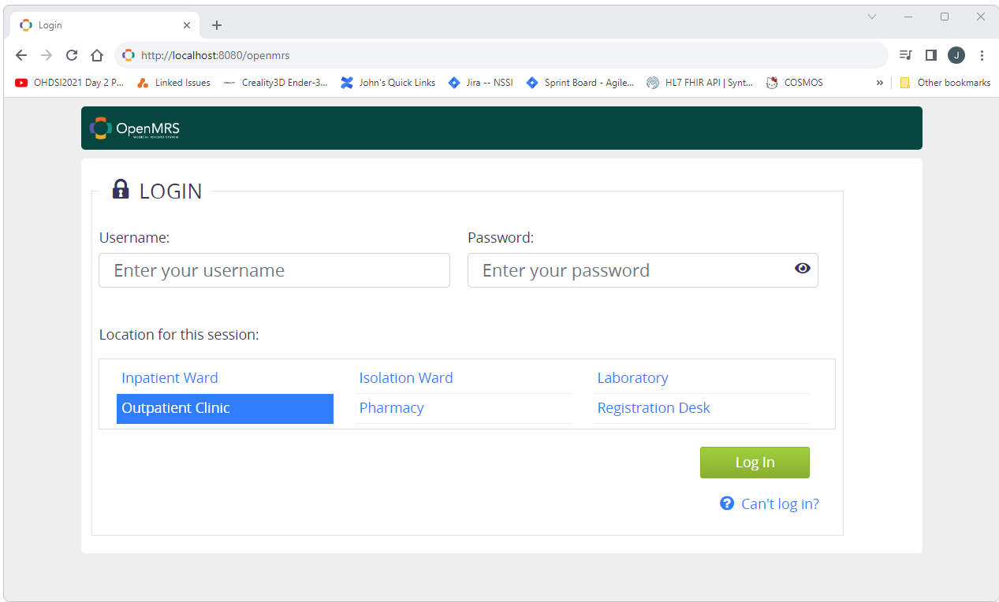
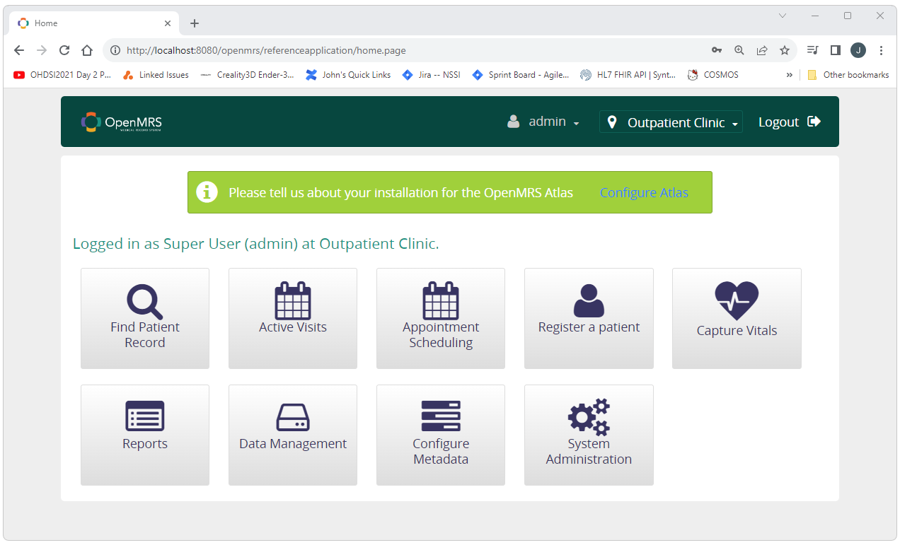

How to Build and Deploy an OpenMRS instance
Introduction
OpenMRS is an opensource electronic Medical Records System.
(more information at openmrs.org)
This page will show how to build and deploy an instance of OpenMRS directly to a Tomcat instance
(no Docker or other dependencies required).
This document walks through the process of creating a deployable instance of OpenMRS from the resources available from OpenMRS.
If you are just looking for a deployable version of the reference implementation created here,
you can just download the openmrs.war file below and deploy it to your Tomcat instance
by dropping it into your Tomcat's webapps folder.
Build and Deploy an OpenMRS instance
Before you get started...
Download the resources
For this example we will be using the OpenMRS reference implementation described at
.
The original files used for this example were downloaded on August 1st 2023 from
https://openmrs.org/download and are available directly here:
The files that need to be downloaded are shown below.
Unpack the resources
These are the files that should exist after the download.
For this build we will need to update the WAR file with the contents of the ZIP file.
To do this we will need to rename the WAR file to a .zip file and then extract the contents of each.
After doing this you should have the files shown below.
We can now build the deployment by moving the .owa and .omod files from the referenceapplication-package-2.12.2 folder to the openmrs folder.
Navigate to the \referenceapplication-package-2.12.2\modules of the reference application.
Copy all of the files there.
Paste them in to the ./openmrs/WEB-INF/bundledModules folder of the openmrs directory.
When this is done, the bundledModules folder should look similar to what is shown below.
Move all of the .owa files from the reference implementation.
Navigate to the ./referenceapplication-package-2.12.2/owa folder.
Copy all of the files there.
Paste these files into ./openmrs/WEB-INF/bundledOwas.
When this is done, the bundledModules folder should look similar to what is shown below.
We can now create the deployable openmrs.war file.
Select the files
with in the openmrs folder and compress them to a zip file.
Rename the resulting .zip file to openmrs.war.
Deploy the application to Tomcat by copying the newly created openmrs.war file to the webapps folder of your Tomcat instance.
Start Tomcat by calling catalina.bat start from the Tomcat bin folder.

Starting Tomcat will take a few minutes as the openmrs application does its initial build.
(in this example it took about a minute and a half).
When Tomcat has finished starting, you should see something like what is shown below in the Tomcat window.

Open a browser and navigate to http://localhost:8080/openmrs.
You should see something like what is shown below.
Log in using admin as the Username and Admin123 as the Password.

After a successful login you should see something like the following.

! ! ! Congratulation, You Have Successfully Deployed an Instance of OpenMRS ! ! !